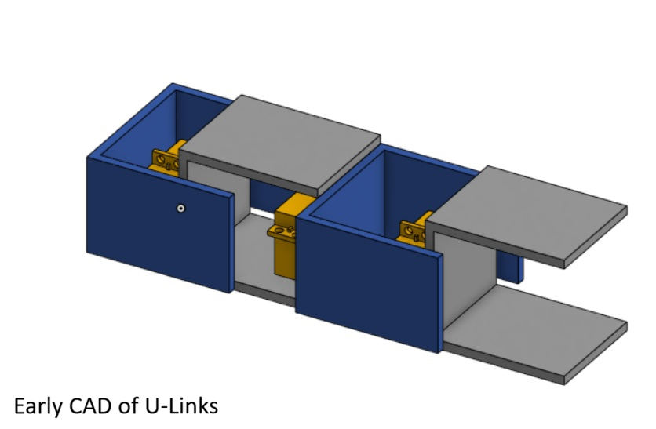
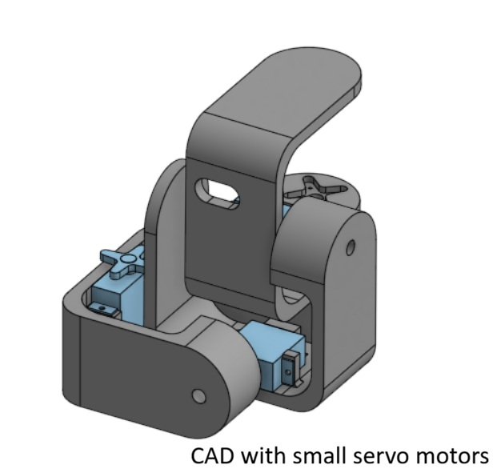
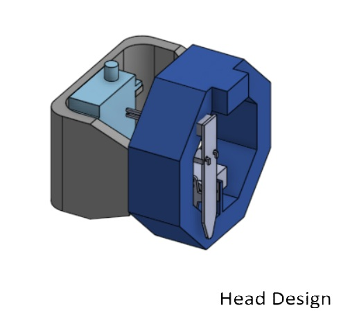
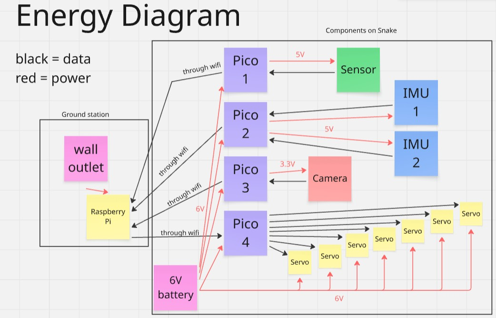

Process
To get from our idea to our product, we followed a process of design, testing, and iteration. We used scrum project management to delegate tasks and stay on track. As designs started working better, we promoted them to high fidelity fabrication and implementation.
Starting Off: Project Management and Ideation
The first part of the process involved setting up a Miro board to track and delegate tasks. At this point in the project, most tasks were researching electrical components that we should purchase and making our first mechanical designs in Onshape.

Sprint 1
Once we had made decisions about what electrical components to purchase and use, specifically the servo motors and the sensor, we designed and 3D printed our first iteration. The first iteration helped us identify what needed to be added to the mechanical design, such as holes for wiring, and what we could do to improve electrical performance, which in this case was using stronger motors. We also managed to get a working prototype of the snake moving in an inchworm motion using an Arduino.
Sprint 2
After testing out what worked and did not work with our first iteration, we started designing the next. We wanted to try using smaller servo motors and making the robot lighter overall, however we found that the smaller motors did not have high enough torque to accomplish the movements we desired. We started designing more mechanisms, such as the "head" and "tail" of the snake, and the sensor-lowering mechanism. We also starting testing and calibrating our soil moisture sensor in different levels of wet soil. A major goal for this sprint was getting the snake to move in a serpentine movement, which we managed to do using an arduino. This sprint also involved getting the live dashboard set up and starting to iterate on the skin design.


Sprint 3
We came across several challenges in this project, and most of them came at this integration stage. Specifically, integrating electrical hardware with software was difficult for the moisture sensor, camera, and Pico boards. This is when we decided to add the raspberry pi as a ground station instead of our computers. We were able to meet two of our goals for software, having a wireless snake and a dashboard that could control the snake remotely. But they did not work together...
Top: wireless control, Right: keyboard control
System Diagram
Core goals behind each design decision we made.

Diagram of systems. How everything integrates.
Energy and Data Flow Diagram
Energy and data flow through several paths in our integrated system. One challenge that we faced with integration is the weight of the power source, which in our case was a NiMh battery. We found that it weighed the tail down, and therefore shaped decisions about motor power and mechanical design around this.
Bill of Materials
| Item | Purpose | Found/Bought From | Price |
|---|---|---|---|
| Soil Sensor (x2) | Measure soil moisture | Digikey | 15.00 |
| JST Wire | Connect soil sensor to microcontroller | Adafruit | 0.95 |
| JST Wire | Connect soil sensor to microcontroller | Amazon | 8.06 |
| HM01B0 Arducam | Camera for dashboard | Amazon | 12.99 |
| ICM-20948 (x2) | IMU for location data | Adafruit | 29.90 |
| 6V Battery | Power supply | Amazon | 19.99 |
| Pico W (x4) | Microcontroller | Adafruit | 24.00 |
| Raspberry Pi 4* | Microcontroller as Ground Station | Robolab | 35.00 |
| Zinc Screw | To attach motors | McMaster | 14.59 |
| Zinc hex nut | To attach motors | McMaster | 2.22 |
| Miscellaneous Screws* | For attaching stuff | Shop/Pie Room | 5.00 |
| Burlap Skin | Skin prototyping | McMaster | 5.00 |
| Cotton Fabric* | Skin prototyping and final | Library | 8.00 |
| Elmer's Glue* | Skin prototyping and final | Library | 16.00 |
| PLA* | Fillament for modules | Shop | 24.00 |
| Euca Board* | head | Shop | 2.90 |
| USBA to micro USB cable (x2)* | pico and pi connection | Home | 14 |
| MG996r Servos* | For joints | Pie Room | 25.50 |
| Total Purchased (excluding found/borrowed) | 194.36 | ||
| Grand Total | 299.26 |
*Bought/found items. Costs are only estimates.